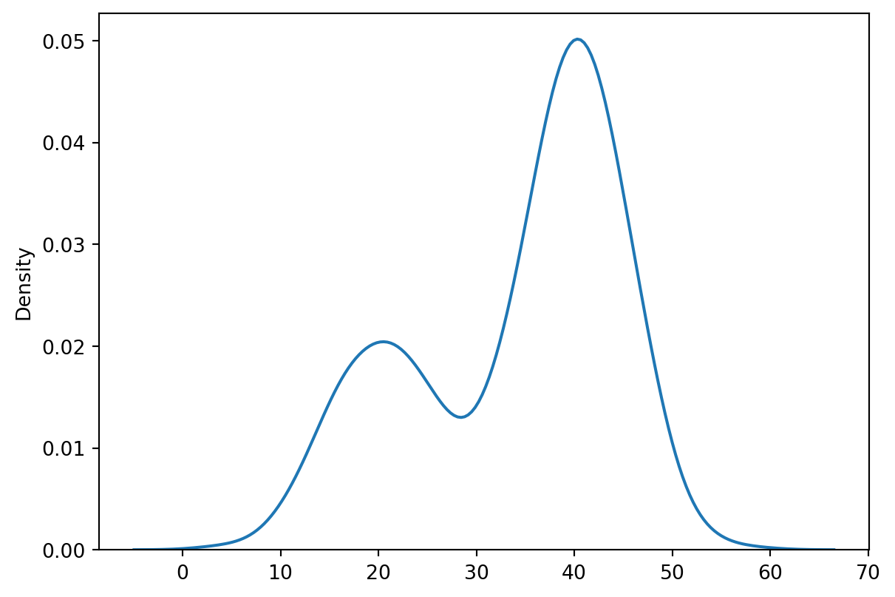

Code
import torch
import torch.nn.functional as F
import numpy as np
import seaborn as sb
import matplotlib.pyplot as plt
np.random.seed(17)
torch.manual_seed(17)
def linear(a, b, x):
return a*x + bIn the last two posts, I have gone over the concept and process of training GANs. I made it seem so straightforward, but reality is harsher. Recall that for GANs, we are training two neural networks at once, and these two compete with each other to mutually improve. Much like real life, if one competitor is too good, the other will not learn anything, if the at point before the end the Generator or the Discriminator becomes too good (or the other becomes too bad), then training breaks down. Thus, training GANs is highly unstable, and any way to ensure smoother training is encouraged.

Activation function is a requirement for neural networks’ ability to approximate complex function. Without it, a neural network will become just another linear function.
import torch
import torch.nn.functional as F
import numpy as np
import seaborn as sb
import matplotlib.pyplot as plt
np.random.seed(17)
torch.manual_seed(17)
def linear(a, b, x):
return a*x + bx = torch.randn(50)
fig = plt.figure(figsize=(9,3))
ax1 = fig.add_subplot(121)
ax2 = fig.add_subplot(122)
ax1.plot(x, linear(.5, 4, x) + linear(3.56, -5.32, x) + linear(-1.86, 3.74, x), 'o--')
ax2.plot(x, torch.relu(0.5*x) + torch.relu(3.56*x) + torch.relu(-1.86*x), 'o--')
ax1.grid()
ax2.grid()
plt.show()
We all starts with the sigmoid function in a binary cross-entropy problem. However, sigmoid, together with tanh, leads to the “vanishing gradient” problem. When the output value of gets close to 0 or 1 for sigmoid (or -1 or 1 for tanh), the gradient gets close to 0, so the weights either are updated very slowly or stop learning altogether. That was when ReLU came into play: the function has a clear, positive gradient when output value is greater than 0, while the bend makes sure that ReLU stacking on each other can produce a curve.

However, the joy ReLU brought came to halt when “dying ReLU” problem was reported. Suppose we have an output smaller or equal 0, then our derivative will be 0. The 0 derivative on the node means that it will not get updated, and that’s the end for it. Worse, the previous components connected to the node are affected as well, so the whole structure of our neural network will be “dead”. To fix, we have the variation: LeakyReLU. For LeakyReLU, the output value below 0 is not set at 0, but is multiplied by a constant (such as 0.2). Gradient for such value will still be non-zero, provide information to update the weights.
Another, more advanced variation is GeLU, where the output is multiplied with i.e. weighted by its percentile. Sounds too complicated? Look at the formula: \[GELU(x)=x*P(X<x)=x*\Phi(x)\] for \(X\) ~ \(\mathcal{N}(0, 1)\)
GELU has been successfully applied in Transformer models such as BERT, GPT-3, and especially in CNN such as ConvNeXts. (Yeah, look at ConvNeXts - it started with a ResNet, the great ConvNet architecture, then the authors slowly introduced all the modern training tricks, until the result surpassed the Swin Transformer in the cheer of CNN-backer/Transformer-haters. Okay, that was eaxaggerating, but still…)
fig = plt.figure(figsize=(9,3))
ax1 = fig.add_subplot(121)
ax2 = fig.add_subplot(122)
ax1.plot(x, F.leaky_relu(x, negative_slope=0.1), 'o--')
ax2.plot(x, F.gelu(x), 'o--')
ax1.grid()
ax2.grid()
plt.show()
Now let’s move on to the second general trick that we have already done: batch normalization.
We all know that neural netowrk is trying to appromixate a certain way of mapping inputs i.e. data to outputs. The parameters of a neural network therefore depend on the data we receive, characteristically the distribution of the data. Here I have this example of an HDR image, which captures a farther range of color and exposure than a compressed format such as JPG or PNG. I found the original image from the Internet here

Now, we train a neural network on data having similar color distribution such as this image, possibly for the task of recognizing grass. The model was trained well. Alas, the testing image contains one such as this

Here we say that the data distribution has shifted between training data and testing data. This generally will cause model problems (decrease accuracy, etc.). Data distribution shift (or covariate shift) can also happen between batches of training data, leading to slow convergence (imagine the model has to take a zig-zag path instead of a straight one). This can be dealt with by normalization, where make sure that the distributions of the training set and the testing set are similar e.g. centered around a mean of 0 and a standard deviation of 1. This could be done by taking the mean and standard deviation for each training batch of image and normalize the inputs of each training batch, then take the accumulated statistics to normalize the testing set during testing. This will smooth out the cost function and increases model performance (you might not need to do this if your training set and testing set are already similar to each other).
However, model is susceptible to internal covariate shift as well, where the activation output distributions shift between each layer. This can happen due to the change in the weights of each layer. Batch normalization came into play here by normalizing the inputs to each layer (“batch” means that we do so for each batch of image). For example, supposed are at nueron \(i\) of non-last layer \(l\), with activated output from the last layer to this neuron being \(a_{i}^{[l-1]}\). The logit out of this neuron will be \[z_{i}^{[l]}=\Sigma W_{i}^{[l]}a_{i}^{[l-1]}\]
Without batch normalization, the logit will be passed into activation to output \(a_{i}^{[l]}\). But here, we will perform batch normalization:
The batch normalization layer seems complicated, but we usually does not need to all the things. As backpropagation is reduced to just calling loss.backward in PyTorch, the nn.BatchNorm2d() (for images) will take care of this during training.
There is another normalization method called layer normalization. I will not go into details here, though I very much want to because it was used in the training of ConvNeXts as well (seriously, I want to make a blog post just about the tricks used in pushing this CNN to surpass Swin). Here is a post about the two normalizations that also have great images. In PyTorch, this is implemented in nn.LayerNorm().
To be honest, there should be tens of tricks for GANs. But I will only cover one this post: Wasserstein GAN (WGAN) and the accompanied Gradient Penalty.
First, we need to talk about mode collapse. Now, a mode in statistical term is the value that we are most likely to get from a distribution (not too correct for continuous distribution, but still great for understanding). This will be represented by a peak in the data distribution, such as the mean in a normal distribution. A distribution can have just one mode, like the normal distribution, or multiple modes like below.
sample1 = np.random.normal(loc=20, scale=5, size=300)
sample2 = np.random.normal(loc=40, scale=5, size=700)
# Concatenating the two sample along the second axis
sample = np.hstack((sample1, sample2))
sb.kdeplot(sample)
plt.show()
The outputs have their modes alright. For example, in our KMNIST dataset, there are 10 modes for the output, corresponding to 10 characters. So we have a new way to think about training: we are trying to make the model learn to shift the distribution of the outputs to approximate the one we want. For illustration, suppose initially our model is outputing each value for each pixel randomly, leading to an output distribution like this.

We want to change the output to this kind of distribution

In the ideal scenario, our model will be guided by the loss function to make the right shift. However, notice a lack in the BCE loss: it only promotes the model generating images close to real images, regardless of the class of the image. This means that there exists a quick n’ dirty way for the Generator to reduce the loss by only generating images from 1 class that the Discriminator is most fooled by. So there exists a case where we end up with a Generator that outputs very realistic kanji character, only that it generates kanji character, say, only “tsu”. That’s boring.
My last paragraph gives hint to the source of the problem: our loss function. BCE loss works to push the Generator forward, but it cannot capture the information of class within the image. We need something else. And that something else is Wasserstein GAN, introducing a new kind of loss function: the Wasserstein Loss (no surprise) a.k.a the Earth Mover’s distance, or EM distance. It measures the difference between two distributions, and can be informally defined as the least amount of energy required to move and mold a earth pile in the shape of one distribution to the shape of another distribution (hence earth mover).
In mathematical form, if we have the noise vector \(z\), the fake image data \(x\), the Generator model \(g()\), the Discriminator who becomes the Critic \(c()\), then the Wasserstein Loss is the difference between the expected value i.e. the mean of the Critic outputs for real images and the mean of the Critic outputs for generated images. \[WLoss=E(c(x))-E(c(g(z)))\]
We still have a minimax game here, with the Generator’s goal being minimize the above difference and the Critic’s goal being maximize the above difference. Notice also that the Critic now is no longer a classifier: it can give any real value possible e.g. higher score for real(istic) examples. This means that the Generator will get useful feedback for all classes of examples, and is less prone to mode collapse. Getting rid of the classifier i.e. the sigmoid function in the output also means that vanishing gradient is also less likely. Two birds, one stone.
W-Loss has one condition: the function of the Critic should be 1-Lipschitz Continuity. That looks intimidating but it just means that the norm of the gradient (the value in 2D math, the \(\sqrt{x^{2}+y^{2}+...}\) as example in higher dimensions) for the Critic can be at most 1 at any point. In other words, the output of the Critic cannot increase/decrease more than linearly at any point. To achieve this, the first proposed (and terrible way, according to the original author) was weight clipping - forcing the weights to a fixed interval, say, [0,1]. Any negative value will be set to 0, and any value more than 1 will be set to 1. This was terrible (I have to say it again) because it limits the potential of the Critic. Another less strict way is gradient penalty (the first dead ar5iv link), where you add a regularization term in the loss function to promote the Critic to be 1-Lipschitz Continuity, as oppposed to forcing it. Formula is \[WLoss=E(c(x))-E(c(g(z))) + \lambda * pen\] with \(pen=E((|| \nabla c(\hat{x})||_{2}-1)^{2})\), \(\hat{x}=\epsilon x + (1-\epsilon)g(z)\)
For completeness, the Critic gradient needs checking at every point in the feature space, which is impractical. What we do is sampling some points from real examples, and then some points from generated examples with weights for each, and then we calculate the penalty for the interpolated examples. An example for the code of WGAN can be found here (nothing for now). For a more technical review of WGAN, check out this paper, also available as a blog post.
Next in line: Conditional GANs.
All the quoted paper from ArXiv was embedded with its corresponding Ar5iv link for the HTML version instead to support the tool. To change to the abstract page, follow this example: https://ar5iv.labs.arxiv.org/html/1409.1556 → https://arxiv.org/abs/1409.1556.